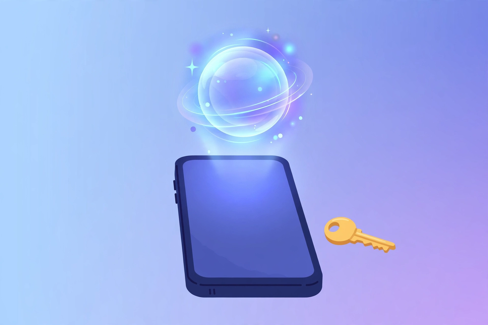

2026년 11월 10일

그동안 무료로 쓰던 갤럭시 AI에 유료 요금제가 생길 수 있다는 소식이 나왔습니다. 삼성 전문 매체 새미구루가 11월 8일(현지 시각) 단독 보도에서 '갤럭시 AI 프리미엄' 얼리 액세스 프로그램 화면을 공개했습니다. 삼성은 아직 공식 발표를 하지 않았고, 테스트 단계라 이름·기능·가격은 정식 출시 때 달라질 수 있습니다.
유료 요금제는 앱 화면에 '맥스(Max)'라는 이름으로 표시됐습니다. 무료 요금제보다 사용량을 4배로 늘려 주고, 사진으로 AI 영상을 만드는 '젠 비디오', 여러 앱에 걸친 작업을 자동화하는 '빅스비 액션', 하루 일정과 소식을 요약해 주는 '데일리 브리핑' 같은 새 기능이 추가됩니다. 앱 코드에 표시된 가격은 월 4.99달러(약 6,800원), 연 47.99달러(약 6만 5,400원)지만, 보도에 따르면 임시 값이라 바뀔 수 있습니다.
핵심은 "무료는 그대로인데, 더 쓰려면 돈을 내라"는 구조입니다. 기본 기능이 완전히 유료로 바뀌는 건 아니지만, 자주 쓰는 사람에게는 사용량 제한이 체감될 수 있습니다. 삼성이 처음 갤럭시 AI를 내놓을 때 "기기 안에 기본으로 있는 기능은 계속 무료"라고 한 만큼, 어디까지가 무료이고 어디부터가 유료인지 정식 발표 때 경계가 어떻게 그어지는지 지켜볼 일입니다.